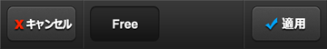
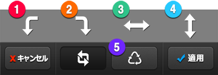
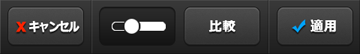
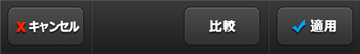

4.  ツール(Tool)メニュー
ツール(Tool)メニュー
(1) トリミング(Crop) : 写真から切り取りたい所の削除や写真の比率を変えたい時に使います。
トリミング(Crop) : 写真から切り取りたい所の削除や写真の比率を変えたい時に使います。


画面上の①トリミング線(Crop Line)を動かし、編集したい大きさ及び比率に設定した後、Applyボタンを押して切り取ります。
②比率を先に決め、固定比率で写真を切り取ることもできます。
(2) 回転(Rotate) : 写真の方向を変えたり、反転させることができます。
回転(Rotate) : 写真の方向を変えたり、反転させることができます。

①時計反対方向に回転、②時計方向に回転、③左右反転、④上下反転を選択することができます。
⑤Resetボタンを押下すると元の方向に戻ります。
5. カラー調整(Color Adjustment)メニュー
カラー調整(Color Adjustment)メニュー
(1) 露出(Exposure) : ①明るさ(Brightness)と②対比(Contrast)を調節します。(右側に動かすと増加、左側に動かすと減少)
露出(Exposure) : ①明るさ(Brightness)と②対比(Contrast)を調節します。(右側に動かすと増加、左側に動かすと減少)

(2) カラー(Color) : ③彩度(Saturation)と④色調(Hue)を調節します。
カラー(Color) : ③彩度(Saturation)と④色調(Hue)を調節します。

(3) ホワイトバランス(White Balance) : ⑤色温度(Color Temperature)と⑥色合い(Tint)を調節します。
ホワイトバランス(White Balance) : ⑤色温度(Color Temperature)と⑥色合い(Tint)を調節します。

(4) カーブ(Curves)–高級機能 : カーブ(Curve)機能を使うと繊細に写真の補正ができます。
カーブ(Curves)–高級機能 : カーブ(Curve)機能を使うと繊細に写真の補正ができます。


①カーブライン(Line)の上をタップすると、②調節ポインタ(Control Point)を追加することができます。
調節ポインタをドラッグ(Drag)するとカーブを動かすことができます。
調節ポインタを横軸を基準とし他のポイントの位置を超えたところに動かすとポイントの削除ができます。
カーブ(Curve)の右側の上段は写真の明るいところを、左側下段は写真の暗いところを表します。
例えば、上の写真のようにS字模様でカーブを作ると、明るいところを益々明るく、暗いところは益々暗くなり、対比(Contrast)が強い写真になります。
③赤(Red), 緑(Green), 青(Blue)を選ぶと、該当色のカーブを別度に調節できて
多様な色調(Color tone)を自由自在に作り出すことができます。

④白黒(B/W)ボタンを押下するとモノクロ状態にてカーブを適用することになり、多様なモノクロの色合いを作り出すことができます。

⑤リセットボタンを押下し、初期状態に戻れます。また、⑥ヘルプボタンを押下し、直ちに使い方を確認することができます。
(5) ヒストグラム(Histogram)–高級機能 : ヒストグラム(Histogram)を使うと写真の露出を細かく調節することができます。
ヒストグラム(Histogram)–高級機能 : ヒストグラム(Histogram)を使うと写真の露出を細かく調節することができます。


①ヒストグラムグラフ(Histogram Graph)は写真の露出分布を表します。グラフの左側が暗所の比率を、グラフの右側が明るい所の比率を表します。
グラフが全体的に均一にされればされるほど適度の露出効果が適用された写真とも言えます。

②自動調節(Auto)ボタンを押下するとグラフに基づいた適正の露出度に自動に調整されます。
③左側ボタン(Black)を動かすと暗所を、④右側ボタン(White)を動かすと明るい所の露出を調節でき、
⑤真ん中ボタン(Mid-tone)は２つのボタンの間の比率を表すため、２つのボタンの動きによって自動に位置が変わってしまいます。
真ん中のボタンを直接動かし、真ん中の色合いの比率を調節することができます。
6.  追加機能(Add-ons)メニュー
追加機能(Add-ons)メニュー
(1) テキスチャー(Texture) : 写真に多様な模様を使い、独特な効果を加えます。
テキスチャー(Texture) : 写真に多様な模様を使い、独特な効果を加えます。


下段の①種類から適用したい模様を選択してから②強弱(Opacity)を調節します。
(2) ヴィネッティング(Vignetting) : この効果で写真周囲を明るく、又は暗くし、独特な効果を加えます。
ヴィネッティング(Vignetting) : この効果で写真周囲を明るく、又は暗くし、独特な効果を加えます。

(3) フレーム(Border) : 様々なフレームが用意されています。
フレーム(Border) : 様々なフレームが用意されています。


フレームを適用した後、他の効果を追加するとフレームも変わってしまうため、他の全ての編集が終わってからフレームを選びましょう。